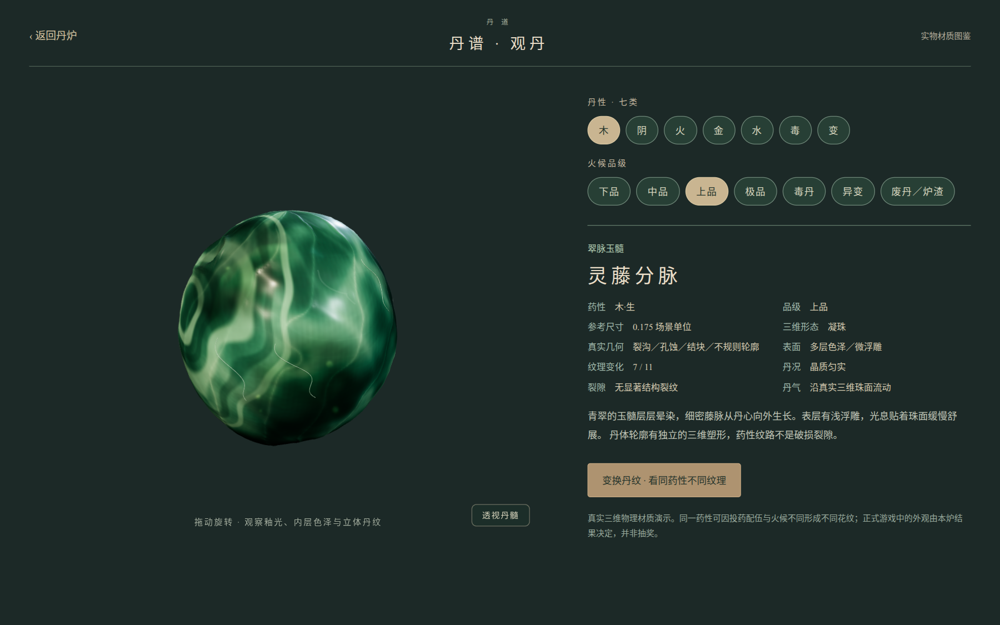
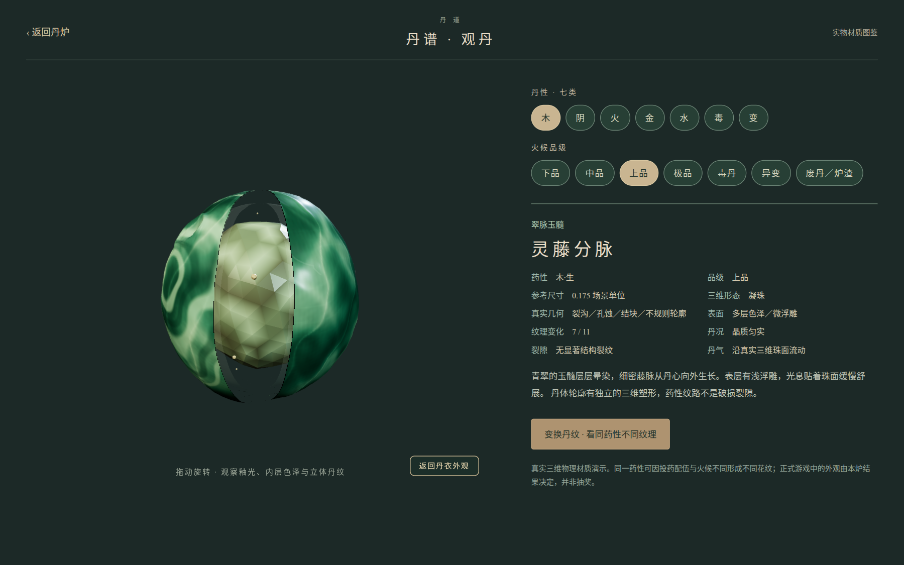
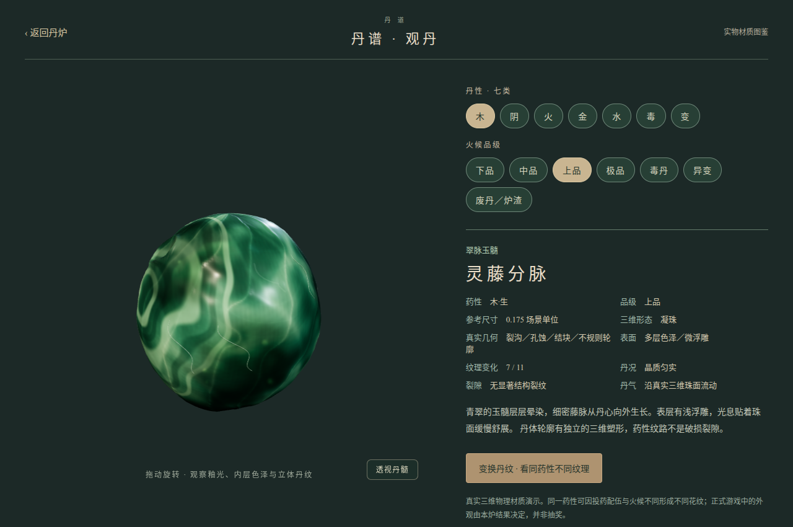
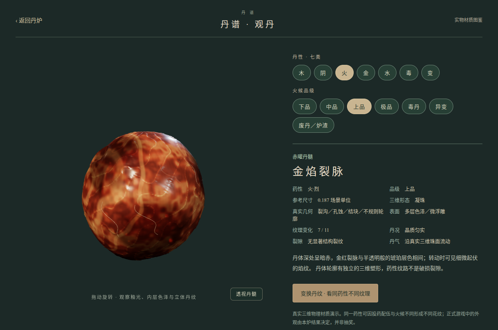
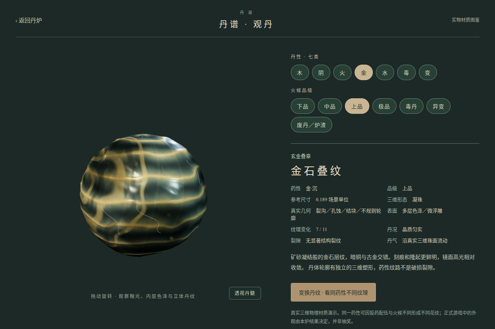
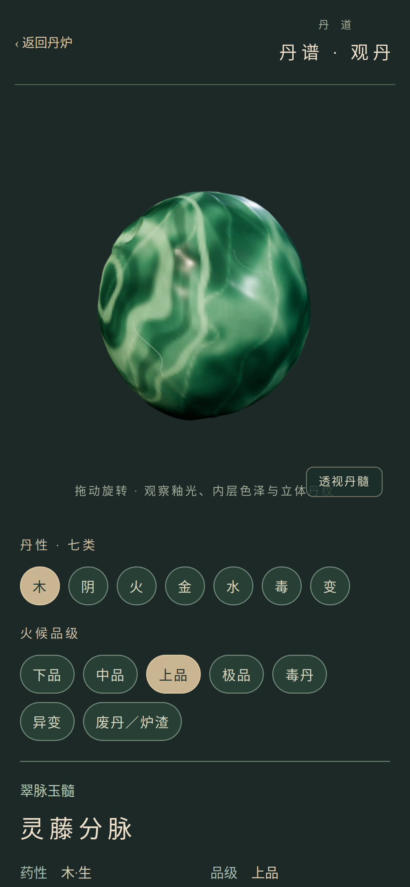
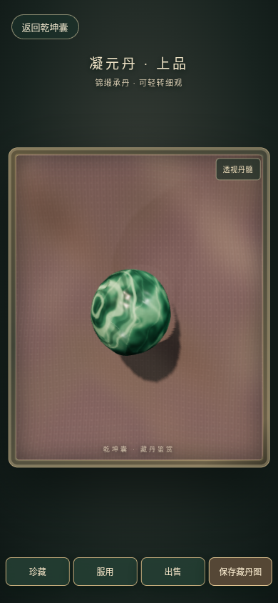

丹道 · P0-04c / 精细矿物层理验收
丹衣的纹路，终于贴合真正的三维表面
下面是同一颗丹、同一纹理种子、同一渲染机位的真实浏览器画面。这次修复的是丹衣 UV 与实体表面错位，不是用 AI 图片替换原游戏。
01 · 正常观丹：前后对照


02 · 真实三层内部：可旋转、可剖视


03 · 四种药性，真实 3D 游戏截图




金系的横纹尚略显规则，阴系层理相对较淡；两项仍保留为美术改进点，不宣称最终品质已经达标。
04 · 手机尺寸不退化


05 · 本轮真实开炉 10 秒短片
这颗丹，来自真实游戏
使用 NVIDIA RTX 5070 Ti 运行 Three.js WebGL2，真实投药、控火、开炉并录制。共 146 个原生 3D 帧/10 秒，视频导出未改变灵石及丹药库存。
MP4 是对浏览器原始 WebM 的 H.264/AAC 兼容转码。播放 24FPS 的重复帧不等于游戏真实达到了 24FPS。
216/216 测试通过 · NVIDIA Chrome WebGL2 实际验收 · 模拟手机完整炼丹/收藏/分享通过 · 实体手机 FPS 与玩家视觉签收仍待完成。P0-04c 为独立候选，不覆盖已通过版本。